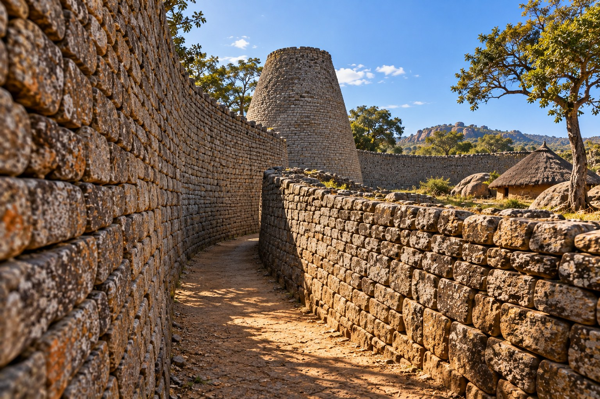

1450 CE — Great Zimbabwe
Southern Africa · The Great Enclosure · Midmorning

Behind the Investigation:
Research Note
Behind the Investigation explains the generative AI capabilities, technologies, and design decisions demonstrated by each Institute investigation.
Institution and Investigation
The Institute of Unnecessary Research · Investigation 18 — Meanwhile, in 1967... · Great Zimbabwe, 1450 CE.
Primary Capability
Historical synthesis and visual storytelling. AI-assisted environmental reconstruction grounded in the surviving architecture of Great Zimbabwe, paired with accessible object-by-object interpretation.
Research Question
How can an interactive historical scene communicate both the material achievement of Great Zimbabwe and the uncertainty of reconstructing its lived environment?
Prompt Method Used
Grounded historical prompting: use the documented curved dry-stone walls, narrow parallel passage, and solid conical tower; avoid defensive battlements and invented tower windows. The second visual proposal was approved for the site.
How It Works
Six discreet circular markers provide short architectural and interpretive notes. Context and Evidence tabs explain the site and provide a source register. Ambient motion is limited to a faint cloud and atmospheric light effect.
Technical Implementation
Generative AI assisted the creation of the background image and website code. Visitor interactions are deterministic HTML, CSS, and JavaScript; there is no live LLM inference at runtime.
Evidence and Limitations
Great Zimbabwe’s dry-stone walls, curved passages, and conical tower survive and are documented. The exact 1450 CE appearance, depicted dwelling, landscaping, surface finishes, and arrangement within this particular viewpoint are interpretive. The image is not a measured archaeological reconstruction.
Representation Audit
No people are depicted. The conical tower is presented as a solid architectural form, not a watchtower. The scene recognizes Great Zimbabwe as an achievement of local African builders and does not imply a foreign origin or reduce its significance to a military fortress.